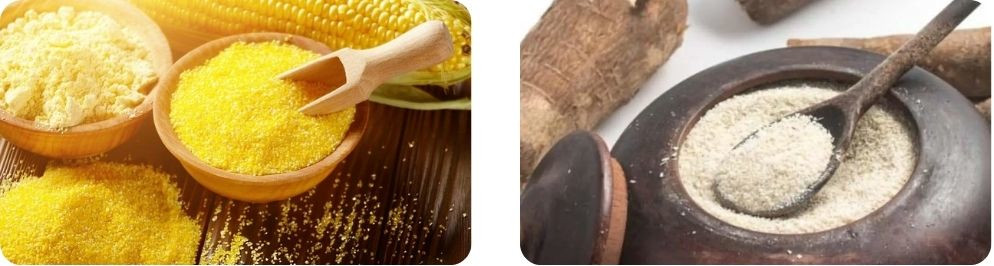

"Why do brazilians eat sand?", some foreigners ask. Because if you know a little bit of brazilian cuisine, you may already know that many of us love eating sand and put it in every dish!
Jokes aside, flour (of many types) is an essential part of many of our traditional foods. Let's learn what we can do with this simple, cheap and amazing ingredient!